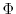
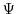
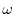
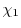
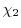
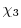
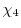

Input: script file, alignment file, PDB file(s) for template(s).
Output:
| job.log | log file |
| job.ini | initial conformation for optimization |
| job.rsr | restraints file |
| job.sch | VTFM schedule file |
| job.B9999???? | PDB atom file(s) for the model(s) of the target sequence |
| job.V9999???? | violation profiles for the model(s) |
| job.D9999???? | progress of optimization |
| job.BL9999???? | optional loop model(s) |
| job.DL9999???? | progress of optimization for loop model(s) |
| job.IL9999???? | initial structures for loop model(s) |
The main MODELLER routines used in each step are given in parentheses.
| stereochemical | restraint_type = 'bond angle dihedral improper' |
| mainchain dihedrals  ,  | restraint_type = 'phi-psi_binormal' |
| mainchain dihedral  | restraint_type = 'omega_dihedral' |
| sidechain dihedral  | restraint_type = 'chi1_dihedral' |
| sidechain dihedral  | restraint_type = 'chi2_dihedral' |
| sidechain dihedral  | restraint_type = 'chi3_dihedral' |
| sidechain dihedral  | restraint_type = 'chi4_dihedral' |
| mainchain CA-CA distance | restraint_type = 'distance' |
| mainchain N-O distance | restraint_type = 'distance' |
| sidechain-mainchain distance | restraint_type = 'distance' |
| sidechain-sidechain distance | restraint_type = 'distance' |
| ligand distance restraints | automodel.nonstd_restraints() routine |
| user defined | automodel.special_restraints() routine |
| non-bonded pairs distance | restraint_type = 'sphere'; calculated on the fly |